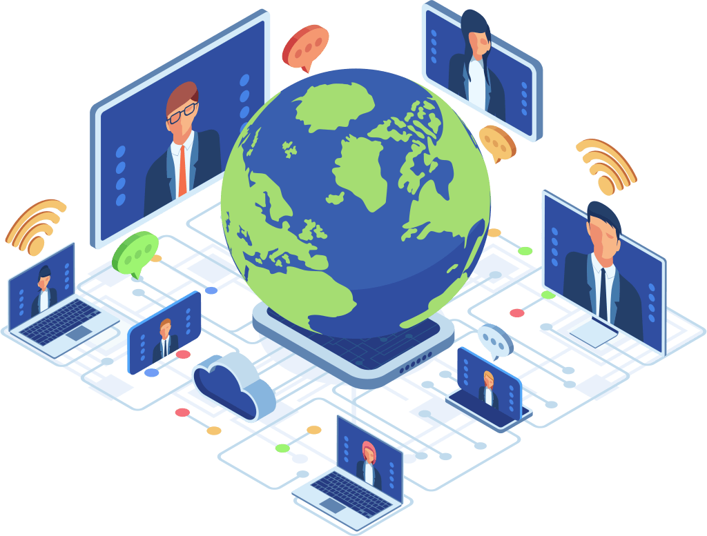
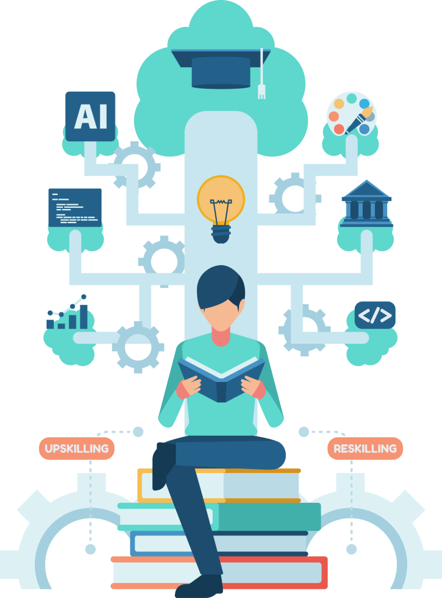

Waqas Azam
Managing DirectorExpertise: Software Architecture, DevOps, Machine Learning
LinkedIn →Software Disruption is built on deep expertise across engineering, data science, AI, and product management. Our leadership team brings decades of combined experience delivering complex technology at scale — across the UAE, Saudi Arabia, and global markets.

Three leaders. Three disciplines. One shared conviction — that the best technology work starts with understanding the business problem, not the tech stack.
Our leadership team covers the complete spectrum of modern technology delivery: from cloud infrastructure and software architecture, through machine learning and AI engineering, to product strategy and customer-centric innovation. This breadth means our recommendations are never constrained by a single discipline, and the people you meet at the start of an engagement are the same people accountable for the outcome at go-live.
Combined, the team has delivered over 50 technology platforms across the UAE and Saudi Arabia, working with enterprises, government entities, financial institutions, and fast-growing startups. Every engagement is led directly by one of our principals — not delegated to a junior team after the pitch.
Expertise: Software Architecture, DevOps, Machine Learning
LinkedIn →Expertise: Machine Learning, Computer Vision, Software Engineering
LinkedIn →Expertise: Product Strategy, Customer-Centric Innovation, Scalable Product Growth
LinkedIn →Waqas leads Software Disruption with a hands-on background spanning software architecture, DevOps, and machine learning. He has spent over a decade building and scaling technology systems for enterprises and startups across the Gulf region — from cloud infrastructure design to ML pipeline deployment in production.
His approach is direct: understand the business problem first, design the architecture second, build the right thing third, and never compromise on production quality. Waqas is the kind of engineer who will tell you when a simpler solution is better than an impressive one — and who will stay on the engagement until the system is running reliably under real conditions, not just in a staging environment.
Waqas founded Software Disruption with the conviction that the gap between good technology and great business outcomes is almost always a people and process problem, not a technical one. He has built the company's delivery methodology around that insight.
Waqas has worked with clients across financial services, e-commerce, real estate, logistics, and government technology in the UAE and internationally. He brings particular expertise to situations where organisations need to modernise legacy systems, migrate to cloud-native architectures, or build AI and ML capabilities on top of existing data infrastructure.
Client testimonials consistently highlight his technical depth, his willingness to engage directly with complex problems, and his commitment to delivering solutions that work in production — not just in the boardroom presentation.
Stack: Python, TensorFlow, Golang, Node.js
Muhammad brings deep technical expertise in software and machine learning engineering, with a particular focus on computer vision systems and high-performance application backends. He works across the full ML lifecycle — from problem framing and data preparation, through model development and training, to production deployment, monitoring, and continuous improvement.
What distinguishes Muhammad is his ability to bridge the gap between research-grade AI and the engineering rigour required for real-world systems. Many ML engineers can build models that perform well in a notebook. Muhammad builds models that perform well in production — under load, with real data distributions, integrated into live workflows, and maintained over time as data patterns shift.
His experience with Python, TensorFlow, Golang, and Node.js means he can work across the full stack of a modern AI application — from the ML model and inference layer through to the backend APIs and services that surface AI outputs to end users.
Muhammad has led the engineering and ML delivery on projects spanning computer vision platforms, intelligent document processing, recommendation systems, and real-time analytics applications. He has worked across retail, financial services, healthcare, and technology sectors — bringing the same engineering rigour to each regardless of domain.
His work on computer vision applications includes systems deployed at scale for visual quality control, facial and object recognition, and content moderation. His backend engineering experience spans high-traffic web applications, real-time data processing pipelines, and the APIs that connect AI systems to the products users interact with daily.
Shahzad leads product strategy and delivery at Software Disruption, bringing a customer-centric philosophy to everything from MVP definition through to full-scale product growth. He is known for his ability to align engineering, design, and business stakeholders around a shared product vision — and for driving execution with the discipline that separates ideas from shipped products.
His focus is always on outcomes: adoption, retention, and measurable business impact. Shahzad does not build features because they are interesting — he builds them because they solve validated problems for real users, and because they move a metric that matters to the business. This outcome-first approach shapes how Software Disruption approaches every product engagement, from early-stage startups defining their first MVP to enterprises modernising products that have served millions of users.
Shahzad is also the principal behind Software Disruption's fractional CPO service — where he provides part-time product leadership to organisations that need senior product direction without the cost of a full-time executive hire. Clients who have worked with him describe his ability to bring clarity to complex, ambiguous product situations as one of his defining professional strengths.
Shahzad has led product engagements across fintech, healthtech, e-commerce, SaaS, and enterprise software — bringing relevant domain experience to each while applying a consistent methodology grounded in validated learning and disciplined execution.
His work includes product discovery and strategy for early-stage startups preparing for their first fundraise, product operations overhaul for scale-ups struggling with delivery velocity, and fractional CPO engagements for organisations navigating product-market fit expansion. He has mentored product teams, hired and assessed product managers, and designed the product processes that give growing organisations the structure to ship consistently without sacrificing quality.
The value of Software Disruption's leadership team is not simply the sum of three individual experts. It is the integration of three complementary disciplines into a single, coherent delivery capability.
Waqas owns the architecture and infrastructure layer. Muhammad owns the ML and engineering execution layer. Shahzad owns the product and strategy layer. Together, they can take an engagement from business problem definition through to a shipped, monitored, production system — without the handoff gaps that cause most technology projects to fail between disciplines.
In many technology consultancies, the senior people sell the engagement and junior people deliver it. At Software Disruption, the principals who meet you at the start are accountable for the outcome at the end. Your engagement will be led by someone at director or manager level who has the technical depth to make the right calls when the difficult decisions arrive.
All three leaders have direct experience working with clients across the UAE and Saudi Arabia. They understand the regional dynamics that affect technology delivery in the Gulf — from data residency requirements and local compliance frameworks, to the pace of digital transformation programmes aligned with Vision 2030 and the UAE's Smart Nation agenda. This context shapes our technical recommendations in ways that a team without regional experience cannot replicate.
Our leadership team is united by one delivery principle: every engagement should leave your team more capable than when we started. We design engagements to transfer knowledge as we build — through documentation, architecture walkthroughs, hands-on training, and the deliberate involvement of your internal team in every critical technical decision. The measure of our success is your independence, not your dependency.
Across the three principals, Software Disruption's leadership team covers the following technology domains directly — not as coordinators of outside specialists, but as practitioners with hands-on delivery experience.

Every Software Disruption engagement begins with a direct conversation with one of our principals. There is no presales team or account management layer between you and the person who will lead your work. Here is what that process looks like:
A free 45-minute discovery call with the principal most relevant to your engagement. We will discuss your business challenge, your current technology state, and what success looks like for your organisation. No pitch. No templates. A real conversation about your situation.
Within five business days of your consultation, you will receive a tailored engagement recommendation — including our assessment of the problem, the approach we would take, the team configuration, and a transparent cost estimate. If we think your challenge is better solved a different way than the one you asked about, we will tell you that too.
Throughout the engagement, you have direct access to the principal leading your work. Not through a project manager or account executive — directly. If something is not working, if priorities need to shift, or if a critical decision needs to be made, you talk to the person with the authority and expertise to act on it.